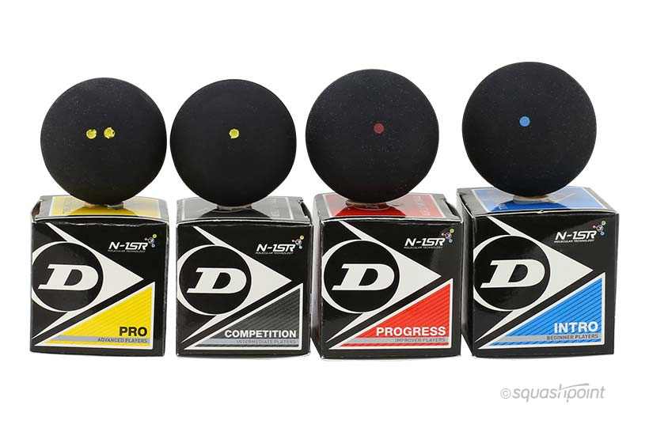

Squash Ball - Squash balls come in different bounces and colors. The red and blue dot balls are much bouncier and great for beginners. Double yellow dot balls are much slower and are typically used during competitive matches and tournaments.
Tech Specs: Head-Light Racquets vs. Head-Heavy Racquets

If you're a beginner, it can't hurt to try out different kinds of racquets. Some are heavier and some are lighter, and it'll definitely take some on-court experimentation to find out the best fit for you. A head-light squash racket is typically best for players who like to volley and flick the ball. Lighter racquets are usually best for players with a strong upper body, too. On the other hand, using a heavy racket allows you to add power to shots, making it easier for players to hit the ball harder with a larger swing.